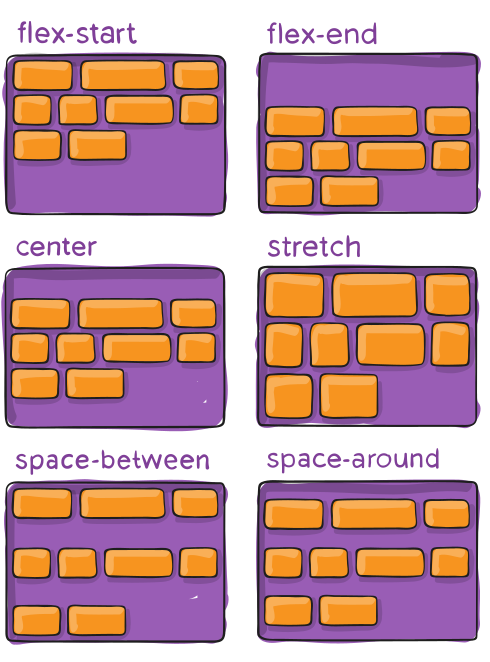
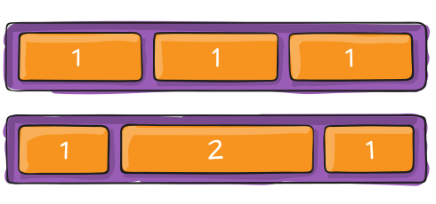
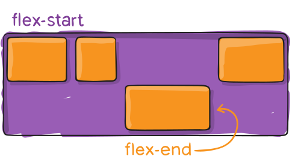

Pagrindinės Flexbox sąvokos

-
Dvi Flexbox ašys
Dirbdami su „flexbox“ turite galvoti apie dvi ašis - pagrindinę (main) ir skersinę (cross) ašis. Pagrindinę ašį apibrėžia flex-direction savybė, o skersinė ašis eina statmenai jai.
-
Pradžios (start) ir pabaigos (end) linijos
Anksčiau CSS buvo nukreiptas į horizontalius ir iš kairės į dešinę rašymo režimus. Šiuolaikiniai išdėstymo metodai apima įvairius rašymo režimus, todėl nebemanome, kad teksto eilutė prasidės dokumento viršuje kairėje ir eis dešinės pusės link, o naujos eilutės pasirodys viena po kitos.
-
Flex container
Dokumento sritis, išdėliota naudojant flexbox, vadinama flex container. Norėdami sukurti flex container, nustatome srities konteinerio display ypatybę kaip flex arba inline-flex. Šiuo atveju, tiesioginiai to konteinerio vaikai taps flex-items.
Flexbox container savybės
-
Display
Apibūdina flex container; inline arba block, priklausomai nuo nurodytos vertės. Ši savybė įgalina flex kontekstą visiems savo tiesioginiams vaikams.
-
Flex-direction
Šia savybe nustatoma pagrindinė (main) ašis, taip apibrėžiama kryptis, į kurią flex items yra dedami į flex container. Flexbox yra vienos krypties išdėstymo koncepcija - flex items yra išdėstyti horizontaliose eilutėse arba vertikaliuose stulpeliuose.

-
Flex-wrap
Pagal numatytuosius nustatymus, flex items bandys tilpti į vieną eilutę. Galite tai pakeisti ir leisti elementams išsidėstyti per kelias eilutes.

-
Flex-flow
Tai yra flex-direction ir flex-wrap savybių, kurios kartu apibrėžia flex container pagrindinę (main) ir skersinę (cross) ašis, santrumpa. Numatytoji vertė yra „nowrap“ eilutė.
-
Justify-content
Tai savybė, kuri apibūdina lygiavimą išilgai pagrindinėje (main) ašyje. Ji padeda paskirstyti papildomos laisvos vietos likučius, kai visi flex items linijoje yra nelankstūs arba yra lankstūs, tačiau pasiekė maksimalų dydį. Tai pat ši savybė turi įtakos elementų lygiavimui, kai jie perpildo eilutę.
-
Align-items
Ši savybė pibrėžia, kaip flex items išdėstomi išilgai esamos linijos skersinėje (cross) ašyje.
-
Align-content
Ši savybė sulygiuoja flex container linijas kai skersinėje (cross) ašyje yra papildomos vietos, panašiai kaip justify-content savybė sulygiuoja atskirus elementus pagrindinėje (main) ašyje.
 -
Gap, row-gap, column-gap
Gap savybė kontroliuoja tarpą tarp flex elementų. Atstumas taikomas tik tarp elementų, o ne ant išorinių kraštų.
Flex items savybės
-
Order
Pagal numatytuosius nustatymus flex items yra išdėstyti pagal šaltinio tvarką. Ši savybė nustato tvarką, kuria jie rodomi flex container.

-
Flex-grow
Ši savybė apibrėžia galimybę flex item augti esant poreikiui. Ji turi vienetinę vertę, kuri pasireiškia kaip proporcija. Flex-grow nurodo, kiek laisvos vietos flex container viduje daiktas turėtų užimti.
 -
Flex-shrink
Veikia panašiai kaip flex-grow, tačiau ši savybė apibrėžia galimybę flex item pagal poreikį mažėti.
-
Flex-basis
Ši savybė nurodo numatytąjį elemento dydį prieš paskirstant likusią vietą. Tai gali būti ilgis (pvz., 20%, 5rem ir tt) arba raktinis žodis. Automatinis raktinis žodis reiškia „pažiūrėkite į mano pločio ar aukščio ypatybę“. Jei nustatyta 0 reikšmė, į papildomą vietą aplink turinį neatsižvelgiama. Jei nustatyta auto reikšmė, papildoma erdvė paskirstoma pagal jos flex-grow vertę.
-
Flex
Santrumpa flex-grow, flex-shrink ir flex-basis kartu sudėjus.Antrasis ir trečiasis parametrai (flex-shrink ir flex-basis) yra neprivalomi. Numatytoji reikšmė: 0 1 auto.
-
Align-self
Ši savybė leidžia nepaisyti numatytojo lygiavimo (arba nurodyto align-items) atskiriems flex items.
